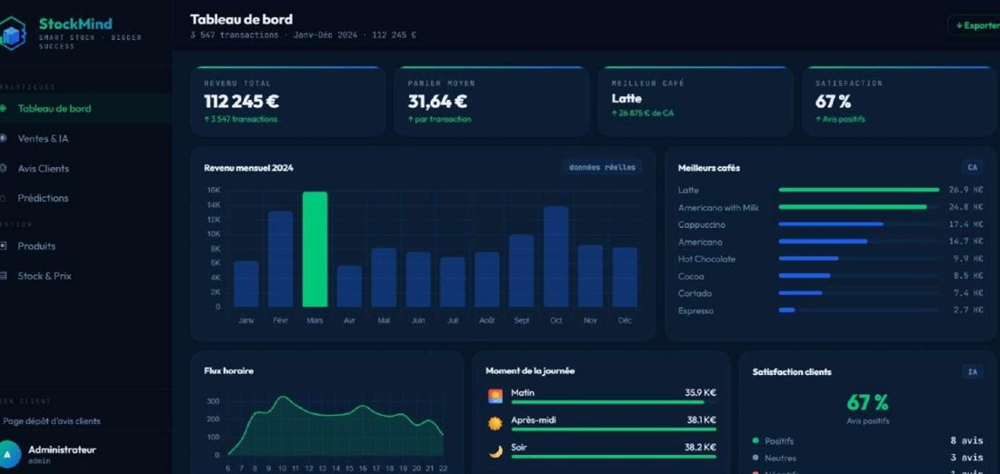

Smart Stock (IA) — StockMind AI
Projet académique · Master MIT (M1), module Management de l’IA, projet d’équipe
- Année
- 2025 – 2026
- Équipe
- Trois étudiants
- Outils
- Python, scikit-learn, MySQL, HTML/CSS/JavaScript

Contexte et problématique
La mauvaise gestion des stocks dans la restauration et le commerce de détail provoque ruptures et surstocks. Le projet propose un outil accessible aux petites structures, qui combine analyse des ventes et analyse des avis clients.
Objectifs
- Prédire la demande avec un modèle Random Forest (objectif de précision supérieur à 80 %).
- Analyser le sentiment des avis clients par traitement automatique du langage.
- Optimiser les niveaux de stock grâce à des alertes et des recommandations de réapprovisionnement.
Rôle et responsabilités
- Travail d’équipe : analyse des besoins, conception du système, développement, rédaction du rapport et présentation.
Méthodologie
- Étude de marché et analyses stratégiques (SWOT, PESTEL).
- Architecture à trois niveaux : interface web, logique métier Python (Random Forest avec scikit-learn, NLP avec NLTK / TextBlob) et base MySQL.
- Prédiction fondée sur des variables telles que le jour, le mois, l’heure, les ventes passées et le score de sentiment.
Logiciels et technologies
Réalisations
- Prototype web à six modules : tableau de bord, ventes et analyse, avis clients (NLP), prédictions Random Forest, produits, stock et prix.
- Gestion des stocks avec seuils d’alerte et statuts OK, critique ou rupture.
- Classification des avis en trois catégories : positif, neutre, négatif.
Résultats
- Test de l’analyse de sentiment : 80 % de bonnes classifications sur 50 avis annotés manuellement (résultat du rapport).
- Prototype alimenté par un jeu de 3 547 transactions de l’année 2024.
Documents
Rapport de projet
Rapport complet (36 pages).
Présentation
Diaporama de soutenance.